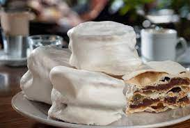
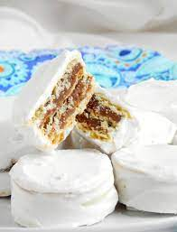
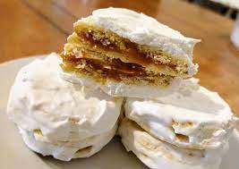
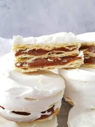
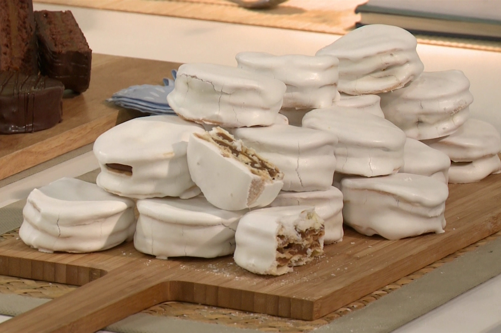

  
 
Una receta facilísima de donde salen 12 alfajores rellenos de riquísimo dulce de leche argentino.
Lista de ingredientes
Para la masa
- 250gr de harina 0000
- 4 yemas
- 50gr de manteca
- 1cda de alcohol
- 1 pizca de sal
- 75ml de agua
Relleno
- Dulce de leche repostero.
Para la cobertura
- 1 clara
- 250gr de azucar impalpable
- Jugo de limón
Procedimiento
Para las tapas:
- Poner en un bol la harina y las yemas.
- Agregar la manteca pomada y luego una cucharada de alcohol para darle textura crocante a las tapas.
- Agregar la sal y el agua tibia.
- Mezclar todos los ingredientes hasta que nos queden unidos formando una masa que vamos a amasarla durante 10 minutos.
- Pasados los 10 minutos, tapar con papel film y dejar reposar en la heladera durante 30 minutos.
- Colocar en la mesada la masa ya fría con harina por debajo y por encima, y con el palo de amasar estirar bien finita
- Cortar en forma redonda con molde o vaso, poner en una placa de horno y pinchar las tapas para que no se inflen.
- Cocinar en horno a 180º por apróximadamente 7 minutos.
- Dejar enfriar antes de armar
Para el armado:
- Colocar dulce de leche repostero entre capa y capa con una manga
- Lograr un alfajor de 3 capas
Para el glaseado
- Colocar y mezclar una clara y 3 cucharadas de azucan impalpable en un bowl
- Llevarlo al microondas por 10 segundos
- Sacar, mezclar nuevamente y llevarlo otros 10 segundos al microondas
- Volver a mezclar y agregar el resto del azucar impalpable
- Agregar el jugo de limón de a gotas mientras vamos mezclando
- Con una cuchara, lo colocamos por encima de los alfajores
- Enfriar y disfrutar